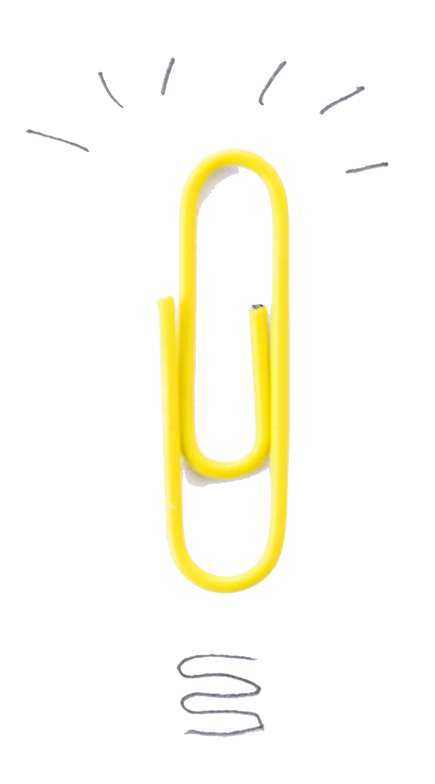

משוב תקופתי
תהליך ללא משוב, לא נחשב תהליך. גם אם חוות הדעת תהיה קשה היא צריכה להיאמר
הגעת לחלק הכיפי!
דיברנו, תכננו והסתכלנו - עכשיו הגיע הזמן לסכם
ולהמשיך לאתגרים חדשים
ולהמשיך לאתגרים חדשים
מה בתכאלס קורה פה?

בודקים עמידה בתוכנית
מעריכים את העובד על ביצועיו עד כה
מעדכנים יעדים במידת הצורך
איך זה עובד?
מה הכי חשוב?
מתכוננים לשיחה, בוחרים
נק' שימוש ושיפור.
נק' שימוש ושיפור.
מיידעים את העובד על השיחה.
בוחרים מקום נוח ופרטי.
בוחרים מקום נוח ופרטי.
נותנים לשיחה מספיק זמן
ובוחרים טיימינג מושלם
לא חופרים - 70% נחנך 30% חונך
ובוחרים טיימינג מושלם
לא חופרים - 70% נחנך 30% חונך
מה היה פה?
1
- תחושה כללית - איך הולך לך התפקיד עד עכשיו?
- באיזו מידה אתה מרגיש שאתה מתפתח ומתקדם בתפקיד?
- מה רמת המקצועיות שלך בשלב הזה בתפקידך?
2
גוף השיחה הוא למעלה מעבר על תוכנית החניכה
על היעדים שהוגדרו בתחילת הדרך.
- עברו על כל יעד ובדקו האם הושג.
- בחרו יעדים שממשיכים לתקופת העבודה הבאה.
3
- מה הציפיות ממני להמשך?
- מה הציפיות להמשך? מה הציפיות מעצמך להמשך?
- התרשמות כללית מהעובד.
- במה עליו להשתפר? במה הוא חזק?
תנו לי את זה כתוב
PDF להורדה
בעיצוב דף זה, נעשה שימוש במאגרי התמונות הבאים:
MclittleStock/stock.adobe.com
Designed by freepik/freepik.com
Brad pict/stock.adobe.com